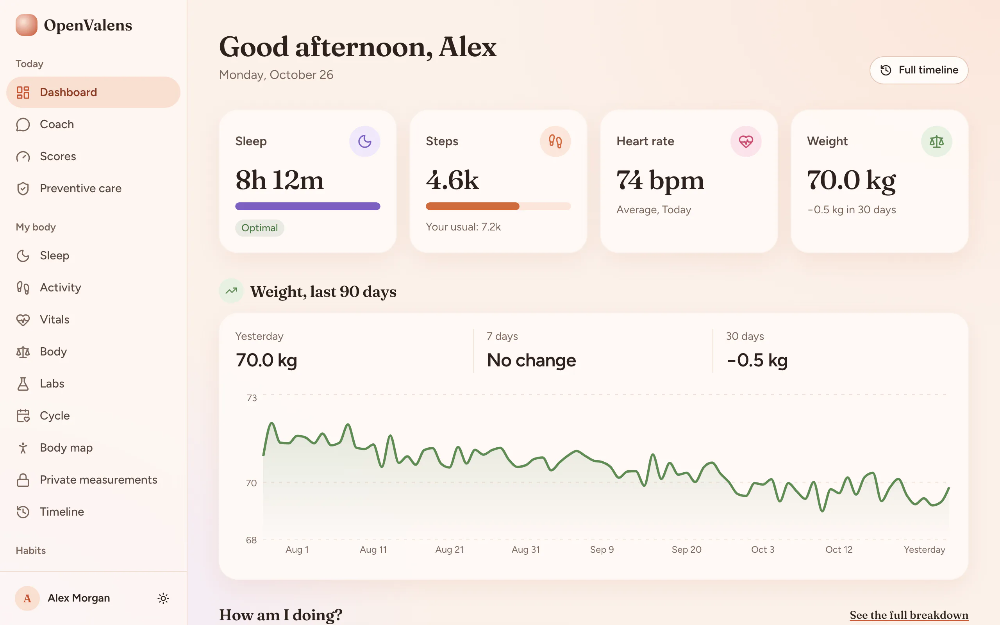
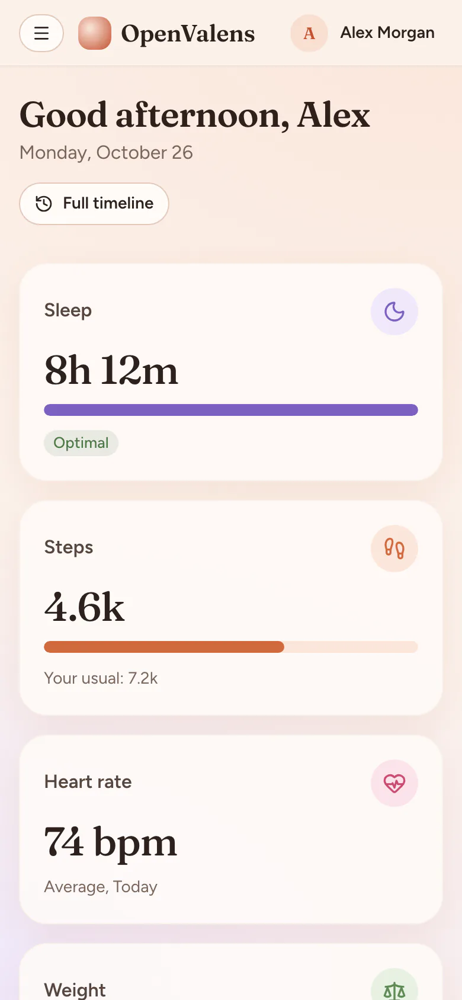
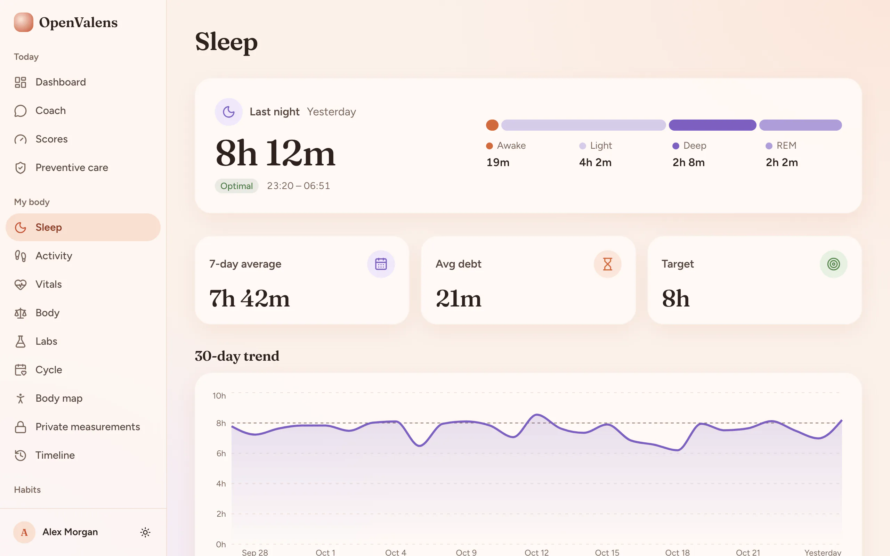
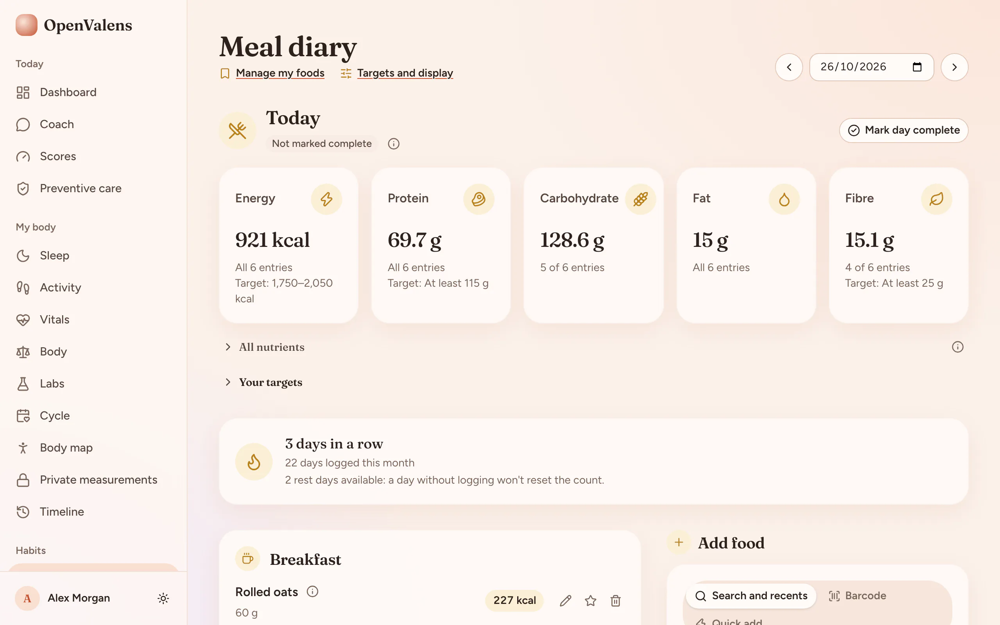
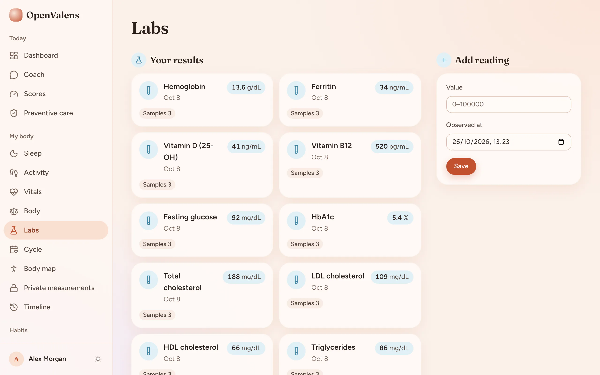
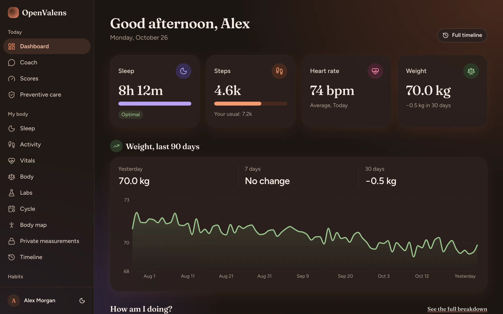

A workspace, looked after for you
We run the server in the EU, with updates and daily backups. Sign up on the web and use it from your browser or the app.
€7.99/month or €69/year, VAT included, after a 30-day trial.
Start free trialLabs, sleep, workouts, food and your watch, in one private record. Open source, hosted in the EU or on your own server.
30 days free, no card required.


Why OpenValens
A closed app asks you to trust code you can’t read, on servers you don’t choose. OpenValens shows its work.
The code is public under the GNU AGPL, and Cloud runs the same code. Export everything as JSON, CSV or PDF, delete it at any time, or run the app on your own server. No lock-in.
“Open” means open source. It never means your records are public: every workspace is invite-only.
Many Garmin, Huawei, Amazfit and Pebble watches, and rings, scales and heart-rate straps, sync straight to the OpenValens app over Bluetooth. No account with the maker, and your records go to your OpenValens server, not to theirs.
About devicesKeep and compare your lab results, marker by marker. See the preventive care that public-health authorities in your region publish, with the source of each item. Make a PDF of your record for your doctor, and share a workspace with your family, each with their own role.
Ask Coach about your own records and what changed in them. On your own server, run it on Anthropic or any OpenAI-compatible service, including a model on your own machine. Cloud includes it, with a monthly cap.
Optional and off by default. It is not medical advice and can be wrong.
| A closed app | OpenValens | |
|---|---|---|
| The code | Private | Public, under the GNU AGPL |
| Where it runs | On the company’s servers | On Cloud in the EU, or on your own server |
| Taking your records with you | Whatever the app offers | Everything, as JSON, CSV or PDF |
| Your watch | Through the maker’s app and account | Many models straight over Bluetooth |
| AI | The provider the company picked | Off until you turn it on; on your own server, any provider or a local model |
Sleep, activity, heart rate and vitals, body measurements, a meal diary with the USDA and Open Food Facts catalogs, labs, supplements and goals, in one record.




Devices
The OpenValens app talks to many watches, rings, scales and heart-rate straps directly over Bluetooth. It never asks for your account with the maker. Apple Health and Health Connect sync too.
Direct Bluetooth support is new, and no model has been tested on a real device yet. The list shows each model’s status. Some Amazfit, Xiaomi and Fossil watches need their pairing key, which you get once from the maker’s account.
See all supported devicesTwo ways to use OpenValens
We run the server in the EU, with updates and daily backups. Sign up on the web and use it from your browser or the app.
€7.99/month or €69/year, VAT included, after a 30-day trial.
Start free trialThe OpenValens software is free. Install the same app on a server you manage; you choose and pay for hosting, and are responsible for its operation and data.
Read the self-hosting guide| Cloud | Self-host | |
|---|---|---|
| Who runs the server | We do, with updates and daily backups | You do, on a server you choose, with built-in upgrade and backup commands |
| Where your records live | In the EU, with our hosting provider in Germany | In your server’s database, wherever you host it |
| Price | €7.99/month or €69/year, VAT included, after a 30-day free trial | The software is free; you pay for your own hosting |
| The app | The same web and mobile app | The same web and mobile app |
| AI provider | Anthropic, with a monthly cap | Your choice: Anthropic, any OpenAI-compatible service or a local model |
| Who is responsible for the data | We are, under the privacy policy and the subprocessors it lists | You are, as the operator of your server |
| Help | Email support, with replies on working days | The guides and GitHub issues |
Sign in to Cloud or to your own server from the same app.

Every release is tagged on GitHub. You need a Linux host with Docker, a domain and a Resend API key. Read the script and the guide first.
git clone https://github.com/nip10/openvalens.git
cd openvalens
git checkout v1.0.1 # the newest release tag
deploy/setup.sh installSimple pricing
Pay monthly or yearly once your trial ends. Self-hosting stays free.
€7.99 / month
€69 / year
VAT included
Questions
Yes. The server, the web app and the mobile app are public on GitHub under the GNU AGPL v3.0 or later, and every release is tagged. You can read the code, run it on your own server and change it. Cloud runs the same code.
On Cloud, your records are encrypted in transit but not end to end. Only authorised staff can reach the production systems, only to run and secure the service, and we look at your account only at your request or to investigate abuse or a security incident.
Your records are never sold or used for advertising. There is no tracking; usage analytics on Cloud is optional, off until you turn it on, and never includes health data. The privacy policy has the details.
On your own server, your records stay in its database, with no published port. Resend sends sign-in and invitation emails and Let’s Encrypt issues the HTTPS certificate. AI, barcode lookup, S3 storage, push and single sign-on stay off unless you turn them on.
No. OpenValens keeps your records and shows what changed in them. It is a general-wellness app for your own records, not a medical device, and the AI coach can be wrong. Talk to a qualified healthcare professional about anything that worries you.
If we ever stop offering Cloud, we give at least 90 days’ notice, refund any prepaid time you have not used, and keep export available until the end of the notice period (terms). The app is open source, so it does not disappear with us: you, or anyone, can keep running it.
OpenValens is a personal record-keeping and general-wellness app. It helps you store, organise and view your own health-related records (such as lab results you enter or import, body measurements, workouts, nutrition, sleep and wearable data) and track healthy habits. It shows publicly available guidance published by recognised public-health authorities, attributed and unaltered, for your information. OpenValens is not a medical device. It is not intended to diagnose, screen for, prevent, monitor, predict, treat or alleviate any disease or condition, and it does not provide medical advice. Talk to a qualified healthcare professional about your health.